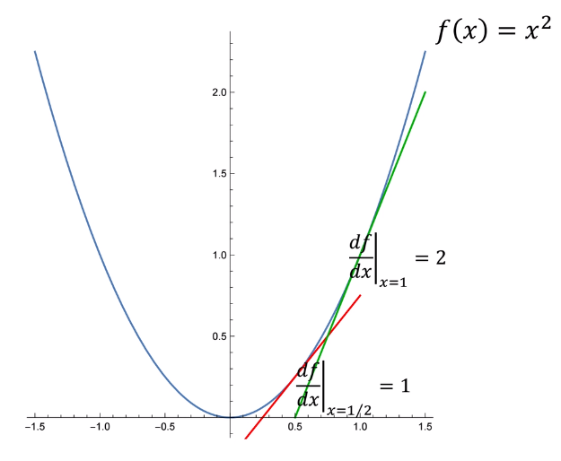
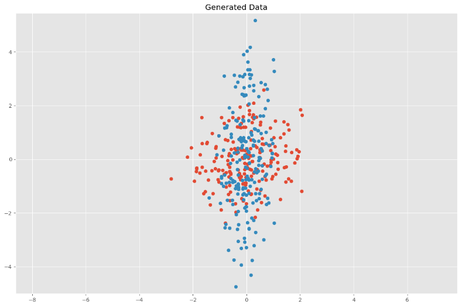
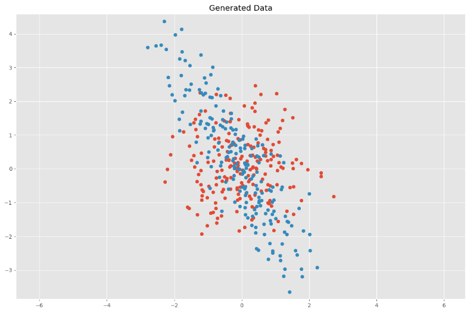
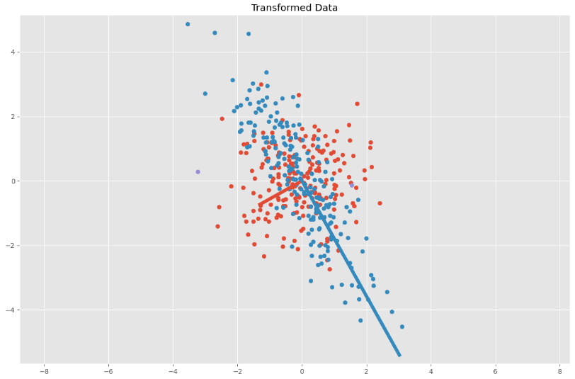
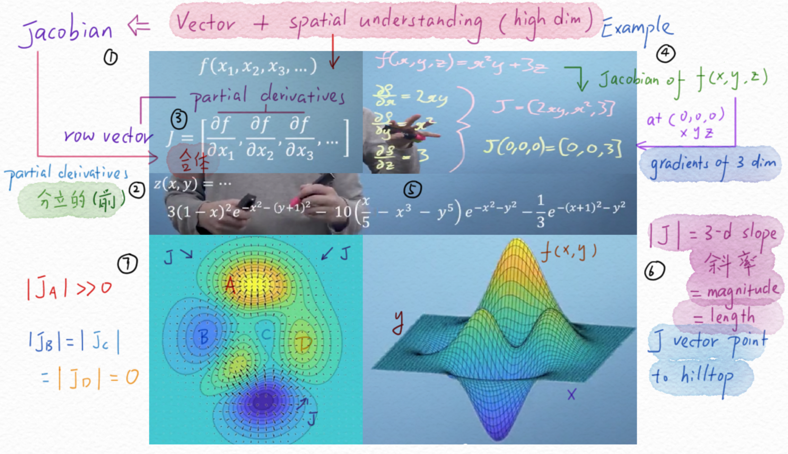
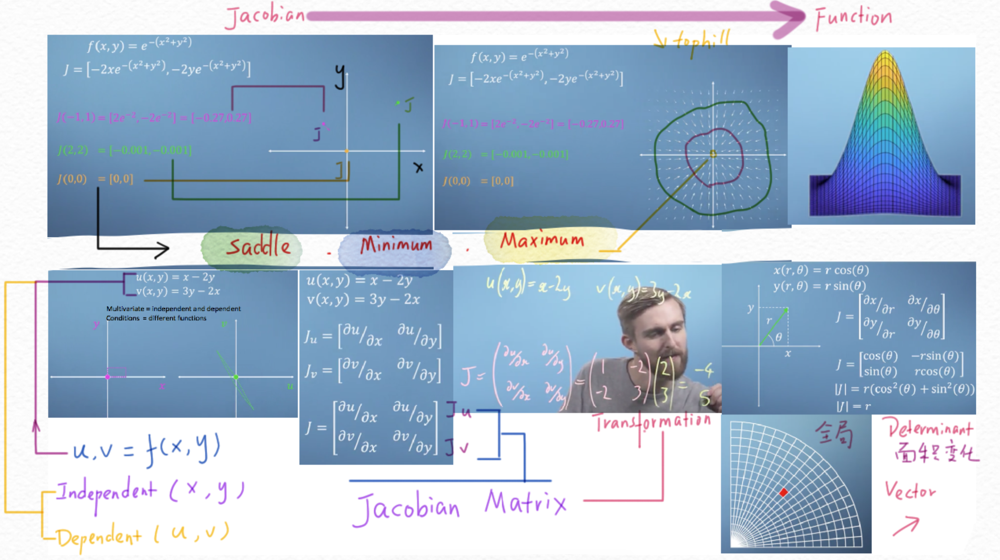
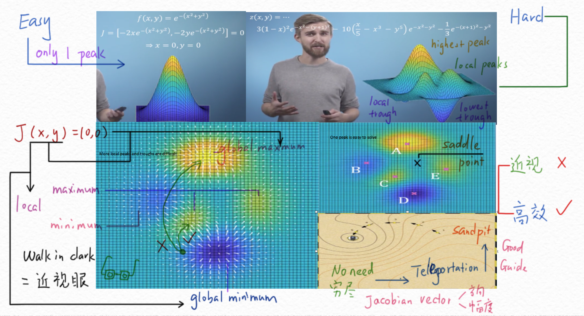
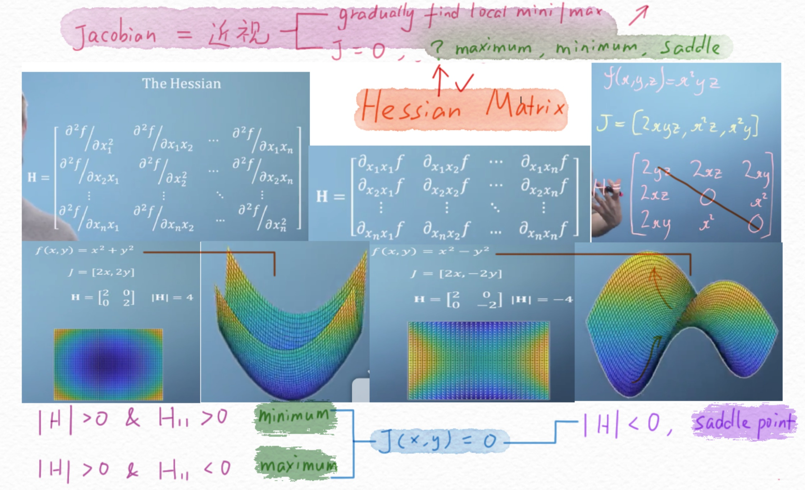

点云中的数学
函数求导

对于函数f(x)=x^2
其一阶导数也是x的函数：\frac {df}{dx} = 2x
其二阶导数为常数，与x无关：\frac {d^2f}{dx^2} = 2
方差&协方差矩阵
基本概念
方差（Variance）衡量的是单个随机变量的变化(比如一个人在群体中的身高)，概率论中方差用来度量随机变量和其数学期望（即均值）之间的偏离程度。方差的公式为：
\begin{equation}
var(x) = \sigma_{x}^{2}=\frac{1}{n-1} \sum_{i=1}^{n}\left(x_{i}-\bar{x}\right)^{2}
\end{equation}
\bar x 是随机变量x的均值，n为样本总数。
标准差（Standard Deviation）是方差的算术平方根，用σ表示。标准差能反映一个数据集的离散程度。
协方差（Covariance）衡量的是两个随机变量同时变化的离散程度(比如一个人在群体中的身高和体重)。方差是协方差的一种特殊情况。
\begin{equation}
cov(x,y) =
\sigma(x, y)=\frac{1}{n-1} \sum_{i=1}^{n}\left(x_{i}-\bar{x}\right)\left(y_{i}-\bar{y}\right)\end{equation}
单个随机变量的方差\sigma_x^2也可以通过协方差表示\sigma(x,x)，方差和协方差有如下性质：
- cov(x, x) = var(x)
- cov(x,y)=cov(y,x)
协方差矩阵
协方差矩阵表示一组随机变量之间的两两线性相关性，其中的每个元素代表了两个随机变量之间的协方差。
根据方差和协方差的定义，假如现在有n个样本数据，每个样本有d个随机变量，则其协方差矩阵为：
\begin{equation}
\Sigma=\left[\begin{array}{ccc}\sigma\left(x_{1}, x_{1}\right) & \dots & \sigma\left(x_{1}, x_{d}\right) \\ \vdots & \ddots & \vdots \\ \sigma\left(x_{d}, x_{1}\right) & \dots & \sigma\left(x_{d}, x_{d}\right)\end{array}\right] \in \mathbb{R}^{d \times d}
\end{equation}
对角线上的元素为各个随机变量的方差，非对角线上的元素为两两随机变量之间的协方差，根据协方差的定义，我们可以认定：矩阵\Sigma为对称矩阵(symmetric matrix)，其大小为d \times d
则如果有一堆二维的点坐标，其协方差矩阵为：
\Sigma=\left(\begin{array}{lll}
\operatorname{cov}(x, x) & \operatorname{cov}(x, y) \\
\operatorname{cov}(y, x) & \operatorname{cov}(y, y) \\
\end{array}\right)
三维的点坐标，协方差矩阵应为：
\Sigma=\left(\begin{array}{lll}\operatorname{cov}(x, x) & \operatorname{cov}(x, y) & \operatorname{cov}(x, z) \\ \operatorname{cov}(y, x) & \operatorname{cov}(y, y) & \operatorname{cov}(y, z) \\ \operatorname{cov}(z, x) & \operatorname{cov}(z, y) & \operatorname{cov}(z, z)\end{array}\right)
多元正态分布
假如数据集X中的向量 \vec x 服从多元正态分布（multivariate Gaussian distribution），且均值向量为\vec \mu，协方差为 \Sigma
\begin{equation}p(\vec{x})=\frac{1}{2 \pi \sqrt{|\Sigma|}} \exp \left(-\frac{(\vec{x}-\vec{\mu})^{\mathrm{T}} \Sigma^{-1}(\vec{x}-\vec{\mu})}{2}\right)\end{equation}
我们一起通过二维点分布，探究协方差矩阵与数据分布特点的关系。
为了简化图像，我们令均值向量 \vec \mu 为0向量，指数前的系数通常作为常量，即跟变化无关，则我们将多元正态分布简化为似然函数：
\begin{equation}L(\vec{x})\propto \exp \left(-\frac{1}{2}\vec{x}^{\mathrm{T}} \Sigma^{-1}\vec{x}\right)\end{equation}
为了展示二维图像，则我们令\vec x = (x, y)^T，包含x，y方向的坐标值，则协方差为以下形式：
\Sigma=\left[\begin{array}{ll}\sigma(x, x) & \sigma(x, y) \\ \sigma(y, x) & \sigma(y, y)\end{array}\right] \in \mathbb{R}^{2 \times 2}
这里令协方差矩阵\Sigma为单位矩阵 I=\left[\begin{array}{ll} 1 & 0\\ 0 & 1 \end{array} \right] ，即随机变量x,y的方差均为1，我们可以生成如下随机分布，共200个点：
import numpy as np
import matplotlib.pyplot as plt
# %matplotlib inline
plt.style.use('ggplot')
plt.rcParams['figure.figsize'] = (12, 8)
# Normal distributed x and y vector with mean 0 and standard deviation 1
x = np.random.normal(0, 1, 200)
y = np.random.normal(0, 1, 200)
X = np.vstack((x, y))
plt.scatter(X[:, 0], X[:, 1])
plt.title('Generated Data')
plt.axis('equal')
plt.show()
此时，我们的变量x,y是相互独立的，协方差矩阵 \Sigma 是如下形式：
C = \Sigma = \left[\begin{array}{cc}
\sigma_x^2 & 0 \\
0 & \sigma_y^2
\end{array}\right]
我们可以通过如下代码计算随机生成的点的真实协方差矩阵
# Covariance
def cov(x, y):
xbar, ybar = x.mean(), y.mean()
return np.sum((x - xbar)*(y - ybar))/(len(x) - 1)
# Covariance matrix
def cov_mat(X):
return np.array([[cov(X[0], X[0]), cov(X[0], X[1])],
[cov(X[1], X[0]), cov(X[1], X[1])]])
# Calculate covariance matrix
print(cov_mat(X)) # (or with np.cov(X))
[[ 1.08970816 -0.03960157]
[-0.03960157 0.99871813]]
可见其十分接近我们之前对随机变量x,y方差的定义：\sigma_x^2 = \sigma_y^2 = 1
即协方差矩阵主轴上的数据描述了其各个维度的离散程度（分布情况），值越大，分散的越开。
线性变换
接下来我们为所有点进行线性变换，来观察数据分布的变化以及协方差矩阵的变化。我们先使用以下缩放矩阵（scaling matrix）修改之前的协方差矩阵：
S = \left[\begin{array}{cc}
s_x & 0 \\
0 & s_y
\end{array}\right]
然后使用旋转矩阵（rotation matrix）进行旋转，\theta为逆时针旋转的弧度值：
\begin{equation}
R=\left[\begin{array}{cc}\cos (\theta) & -\sin (\theta) \\ \sin (\theta) & \cos (\theta)\end{array}\right]
\end{equation}
本例设s_x = \frac {1}{2}, s_y = 2, \theta=\frac {\pi}{6}即水平方向缩放一半，竖直方向放大一倍，然后逆时针旋转30度：
S = \left[\begin{array}{cc}
\frac {1}{2} & 0 \\
0 & 2
\end{array}\right]
,
R = \left[\begin{array}{cc}
\frac {\sqrt 3}{2} & -\frac {1}{2} \\
\frac {1}{2} & \frac {\sqrt 3}{2}
\end{array}\right]
只进行缩放操作：

代码实现：
import numpy as np
import matplotlib.pyplot as plt
plt.style.use('ggplot')
plt.rcParams['figure.figsize'] = (12, 8)
# Normal distributed x and y vector with mean 0 and standard deviation 1
x = np.random.normal(0, 1, 200)
y = np.random.normal(0, 1, 200)
X = np.vstack((x, y)) # 2xn
sx, sy = 0.5, 2.0
Scale = np.array([[sx, 0], [0, sy]])
Y = Scale.dot(X)
# 原始点集
plt.scatter(X[0, :], X[1, :])
# 缩放后点
plt.scatter(Y[0, :], Y[1, :])
plt.title('Generated Data')
plt.axis('equal')
plt.show()
先缩放，后旋转：

代码实现：
import numpy as np
import matplotlib.pyplot as plt
plt.style.use('ggplot')
plt.rcParams['figure.figsize'] = (12, 8)
# Normal distributed x and y vector with mean 0 and standard deviation 1
x = np.random.normal(0, 1, 200)
y = np.random.normal(0, 1, 200)
X = np.vstack((x, y)) # 2xn
sx, sy = 0.5, 2.0
Scale = np.array([[sx, 0], [0, sy]])
# Rotation matrix
theta = np.pi / 6
c, s = np.cos(theta), np.sin(theta)
Rot = np.array([[c, -s], [s, c]])
# Transformation matrix
T = Rot.dot(Scale)
# Apply transformation matrix to X
Y = T.dot(X)
# 原始点集
plt.scatter(X[0, :], X[1, :])
# 缩放、旋转后
plt.scatter(Y[0, :], Y[1, :])
plt.title('Generated Data')
plt.axis('equal')
plt.show()
# Calculate covariance matrix
print(cov_mat(Y)) # (or with np.cov(Y))
其协方差矩阵输出结果为：
[[ 1.1830068 -1.66028421]
[-1.66028421 3.10071868]]
为了计算变换与协方差矩阵个关系，我们将旋转矩阵、缩放矩阵合并为同一个变换矩阵：A = RS
我们想了解的是经过线性变换后，其协方差矩阵的变换。即将所有点进行变换操作\vec t = A\vec x之后，在\vec t集合情况下的协方差矩阵\Sigma对应的值。则将\vec x = A^{-1}\vec t 代入函数（3.2）可得：
\begin{align*}L(\vec{x})&\propto
\exp \left(-\frac{1}{2}(A^{-1}\vec t)^{\mathrm{T}} (A^{-1}\vec t))\right)\\
&=\exp \left(-\frac{1}{2}{\vec t}^T(A^{-1})^{\mathrm{T}} A^{-1}\vec t)\right)\\
&=\exp \left(-\frac{1}{2}{\vec t}^T(A^{T})^{-1} A^{-1}\vec t)\right)\\
&=\exp \left(-\frac{1}{2}{\vec t}^T (A A^T)^{-1}\vec t)\right)
\end{align*}
\tag{3.2}
注意，由于之前的\Sigma为单位矩阵，故这里的\Sigma^{-1}直接省掉。
则变换后的多元正态分布的协方差矩阵为：
\begin{align*}
& A = RS = \left[\begin{array}{cc}
\frac {\sqrt 3}{2} & -\frac {1}{2} \\
\frac {1}{2} & \frac {\sqrt 3}{2}
\end{array}\right]
\left[\begin{array}{cc}
\frac {1}{2} & 0 \\
0 & 2
\end{array}\right]
=
\left[\begin{array}{cc}
\frac {\sqrt 3}{4} & -1 \\
\frac {1}{4} & {\sqrt 3}
\end{array}\right]
\tag{3.3}
\\
& \Sigma = A A^T =
\left[\begin{array}{cc}
\frac {\sqrt 3}{4} & -1 \\
\frac {1}{4} & {\sqrt 3}
\end{array}\right]
\left[\begin{array}{cc}
\frac {\sqrt 3}{4} & \frac {1}{4} \\
-1 & {\sqrt 3}
\end{array}\right]
=
\left[\begin{array}{cc}
\frac {19}{16} & -\frac {15\sqrt 3}{16} \\
-\frac {15\sqrt 3}{16} & \frac {49}{16}
\end{array}\right]
\tag{3.4}
\end{align*}
可验证与之前代码输出的协方差结果近似。现在我们已经得到协方差矩阵与缩放矩阵、旋转矩阵的关系，由于协方差矩阵是正定对称矩阵即可对角化矩阵，则接下来我们对协方差矩阵进行特征值分解，观察其特征向量矩阵、特征值矩阵与缩放矩阵、旋转矩阵的关系
特征分解
根据线性代数相关定义，对于任意可对角化矩阵，都存在一个特征分解（eigen decomposition）
U为特征向量矩阵，且是正交矩阵满足U^T=U^{-1}, UU^T=I，
\Lambda为特征值矩阵，且是对角矩阵，其对角线上是特征值，非对角线的元素为0。
则，我们对\Sigma 进行变换可得：
\Sigma=\left(U \Lambda^{1 / 2}\right)\left(U \Lambda^{1 / 2}\right)^{T}
则、联立方程(3.3),(3.4)可得
\left(U \Lambda^{1 / 2}\right)\left(U \Lambda^{1 / 2}\right)^{T} = AA^T=RS(RS)^T = RSS^TR^T
此时，A=RS=U \Lambda^{1 / 2}，即可发现旋转矩阵和特征向量矩阵相关，缩放矩阵与特征值矩阵相关。
\begin{align*}
U=\pm R = \pm
\left[\begin{array}{cc}
\frac {\sqrt 3}{2} & -\frac {1}{2} \\
\frac {1}{2} & \frac {\sqrt 3}{2}
\end{array}\right]
\end{align*}
\begin{align*}
\Lambda=SS^T =
\left[\begin{array}{cc}
\frac {1}{2} & 0 \\
0 & 2
\end{array}\right]
\left[\begin{array}{cc}
\frac {1}{2} & 0 \\
0 & 2
\end{array}\right]
=
\left[\begin{array}{cc}
\frac {1}{4} & 0 \\
0 & 4
\end{array}\right]
\end{align*}
我们通过以下代码对\Sigma 进行特征分解、对结果进行验证：
import numpy as np
sigma = np.array([
[19 / 16, -15 * np.sqrt(3) / 16,],
[-15 * np.sqrt(3) / 16, 49 / 16]
])
eVa, eVe = np.linalg.eig(sigma)
print("eigen value:\n", eVa)
print("eigen vector:\n", eVe)
eigen value - SS^T:
[0.25 4. ]
eigen vector - U:
[[-0.8660254 0.5 ]
[-0.5 -0.8660254]]
可验证该输出结果与上述一致。
我们可以将特征值和特征向量分别相乘，得到变换后椭圆区域的两个基向量：
# Calculate covariance matrix
C = cov_mat(Y)
print(C) # (or with np.cov(Y))
eVa, eVe = np.linalg.eig(C)
plt.scatter(Y[:, 0], Y[:, 1])
for value, eigen in zip(eVa, eVe.T):
plt.plot(
[0, 3 * np.sqrt(value) * eigen[0]],
[0, 3 * np.sqrt(value) * eigen[1]],
lw=5)
plt.title('Transformed Data')
plt.axis('equal')
plt.show()
输出：

总结：
一个多元正态分布的概率密度函数中，其协方差矩阵 \Sigma 包含了分布的旋转角度和缩放信息，其均值向量\vec \mu包含了密度中心的位置信息。
雅克比矩阵
理解雅克比向量

将多个维度作为整体，来理解函数与变量的关系。
雅克比矩阵即通过线性代数的向量来描述高纬度的数据在空间中的表现。
通过向量将每一个函数的变量变化（偏导数）合并为一个整体，在高维空间去观察变化。
|J|是其在梯度方向的向量的模，该向量指向其梯度的上坡方向。
雅克比向量&矩阵

假如我们求一个两个参数的函数f(x,y)的导数时，会先去求出每一个变量的偏导数\frac{\partial f}{\partial x}和\frac{\partial f}{\partial y}，然后将两个偏导数放到一个row vector中，即是一个Jacobian。通过不同x，y参数所组成的vector在空间中的长度（模）和方向，我们可以理解不同参数对应结果的变化关系。
梯度gradient为0的地方可能有三个种：顶点Maximum Point、谷点Minimum Point、鞍点Saddle Point 。
Jacobian Matrix
例如：
\begin{aligned}
&u(x, y)=x-2 y\\
&\mathrm{v}(x, y)=3 y-2 x
\end{aligned}
则自变量为x、y，因变量为u、v。则雅克比矩阵为为两个雅克比向量的合体：
J_{u}=\left[\begin{array}{ll}
\partial u / \partial x & \partial u / \partial y
\end{array}\right]
J_{v}=\left[\begin{array}{11}\partial v / \partial x & \partial v / \partial y
\end{array}\right]
合并为Jacobian Matrix
J=\left[\begin{array}{ll}
\partial u / \partial x & \partial u / \partial y \\
\partial v / \partial x & \partial v / \partial y
\end{array}\right]
雅克比矩阵：是多个多元函数的一阶偏导数以一定方式排列形成的矩阵，其体现了可微方程与给出点的最优线性逼近。可以理解为多元函数对各个变量的导数。
设 f: \mathbb{R}_{n} \rightarrow \mathbb{R}_{m} 是一个函数，它的输入是向量 \mathbf{x} \in \mathbb{R}_{n} ，输出是向量 \mathbf{y}=f(\mathbf{x}) \in \mathbb{R}_{m}:
\left\{\begin{array}{l}
y_{1}=f_{1}\left(x_{1}, \ldots, x_{n}\right) \\
y_{2}=f_{2}\left(x_{1}, \ldots, x_{n}\right) \\
\ldots \\
y_{m}=f_{m}\left(x_{1}, \ldots, x_{n}\right)
\end{array}\right.
则雅可比矩阵是一个m×n矩阵：
\begin{equation}\mathbf{J}=\left[\begin{array}{ccc}\frac{\partial \mathbf{f}}{\partial x_{1}} & \cdots & \frac{\partial \mathbf{f}}{\partial x_{n}}\end{array}\right]=\left[\begin{array}{ccc}\frac{\partial f_{1}}{\partial x_{1}} & \cdots & \frac{\partial f_{1}}{\partial x_{n}} \\\vdots & \ddots & \vdots \\\frac{\partial f_{m}}{\partial x_{1}} & \cdots & \frac{\partial f_{m}}{\partial x_{n}}\end{array}\right]\end{equation}
雅克比寻找极值

当函数进入极大值或极小值时，其梯度会比较平缓，接近或等于0。当极值只有一个时，找到对应的x，y位置比较容易。
当函数比较复杂时，极值可能有多个，会有全局最高的山顶、全局最低的山谷、局部山顶、局部的山谷。这些地方的梯度也都是0。如果将x，y等于0，则无法确定是哪个极值。
如果我们任意选择一点，无法知道最高峰和最低谷的位置。但是可以知道其最近的较高点和较低点。雅克比Vector的方向指向了最近的较高点，其模表述了幅度。即可以帮我们高效地找到局部的较高和较低点，但不能帮我们找到全局的最高点和最低点。
黑塞矩阵
理解黑塞矩阵

数学上，黑塞矩阵（Hessian matrix又称海森矩阵）是一个自变量为向量的实值函数的二阶偏导数组成的方阵。即可以理解为对Jacobian Vector再次进行求导，把每一项偏导项再做一次求导。其矩阵是对称矩阵。
那么如何在J处于极值情况下，判断这个极值是最大值、最小值、还是鞍值？这就需要使用黑塞矩阵了。
对于二次函数，黑塞矩阵为常数矩阵，与参数无关。
令J = 0
当H的行列式|H|>0且左上角值H_{11}>0，此时函数对应极小值。
当H的行列式|H|>0且左上角值H_{11}>0，此时函数对应极大值。
当H的行列式|H|<0 ，在一个方向上是极大值，另一个方向是极小值。
如果一个多维函数如下：
y=f\left(x_{1}, \ldots, x_{n}\right)
假如此函数的所有二阶导数都存在，则其黑塞矩阵为：
H(f)_{i j}(x)=D_{i} D_{j} f(x)
计算过程
其一阶偏导为向量，称作梯度（gradient）：x=x_1,...,x_n
\nabla f(\boldsymbol{x})=\left[\begin{array}{c}
\frac{\partial f}{\partial x_{1}} \\
\frac{\partial f}{\partial x_{2}} \\
\vdots \\
\frac{\partial f}{\partial x_{n}}
\end{array}\right]
\delta即为偏导数partial
按照如下形式求每一项的二阶偏导：
\nabla\left(\frac{\partial f}{\partial x_{i}}\right)=\left[\begin{array}{ccc}\frac{\partial}{\partial x_{1}} \frac{\partial f}{\partial x_{i}} & \frac{\partial}{\partial x_{2}} \frac{\partial f}{\partial x_{i}} & \cdots & \frac{\partial}{\partial x_{n}} \frac{\partial f}{\partial x_{i}}\end{array}\right]
则可得f(x)的二阶偏导：
H(x)=\nabla^{2} f(\boldsymbol{x})=\left[\begin{array}{cccc}\frac{\partial}{\partial x_{1}} \frac{\partial f}{\partial x_{1}} & \frac{\partial}{\partial x_{2}} \frac{\partial f}{\partial x_{1}} & \cdots & \frac{\partial}{\partial x_{n}} \frac{\partial f}{\partial x_{1}} \\ \frac{\partial}{\partial x_{1}} \frac{\partial f}{\partial x_{2}} & \frac{\partial}{\partial x_{2}} \frac{\partial f}{\partial x_{2}} & \cdots & \frac{\partial}{\partial x_{n}} \frac{\partial f}{\partial x_{2}} \\ \vdots & \vdots & \ddots & \vdots \\ \frac{\partial}{\partial x_{1}} \frac{\partial f}{\partial x_{n}} & \frac{\partial}{\partial x_{2}} \frac{\partial f}{\partial x_{n}} & \cdots & \frac{\partial}{\partial x_{n}} \frac{\partial f}{\partial x_{n}}\end{array}\right]
即H(x)为方阵：
\begin{equation}\left[\begin{array}{cccc}
\frac{\partial^{2} f}{\partial x_{1}^{2}} & \frac{\partial^{2} f}{\partial x_{1} \partial x_{2}} & \cdots & \frac{\partial^{2} f}{\partial x_{1} \partial x_{n}} \\
\frac{\partial^{2} f}{\partial x_{2} \partial x_{1}} & \frac{\partial^{2} f}{\partial x_{2}^{2}} & \cdots & \frac{\partial^{2} f}{\partial x_{2} \partial x_{n}} \\
\vdots & \vdots & \ddots & \vdots \\
\frac{\partial^{2} f}{\partial x_{n} \partial x_{1}} & \frac{\partial^{2} f}{\partial x_{n} \partial x_{2}} & \cdots & \frac{\partial^{2} f}{\partial x_{n}^{2}}
\end{array}\right]\end{equation}
黑塞矩阵常通过牛顿法来处理大规模优化问题。
黑塞矩阵的对称性：
\boldsymbol{H}_{i j}=\frac{\partial}{\partial x_{j}} \frac{\partial f}{\partial x_{i}}=\frac{\partial}{\partial x_{i}} \frac{\partial f}{\partial x_{j}}=\boldsymbol{H}_{j i}
练习：**
- 求函数f(x,y,z)=x^2z + 5x - 2y^3的雅克比向量
- 求函数f(x,y)=-x^2-4y^2+3x+9y-3xy的黑塞矩阵
\nabla f(x,y) = \left[\begin{array}{c}
\frac{\partial f}{\partial x} \\
\frac{\partial f}{\partial y}
\end{array}\right] = \left[\begin{array}{c}
-2x+3-3y \\ -8y+9-3x
\end{array}\right]
H(x)=\nabla^{2} f(\boldsymbol{x})=\left[\begin{array}{cccc}
\frac{\partial}{\partial x} \frac{\partial f}{\partial x} &
\frac{\partial}{\partial y} \frac{\partial f}{\partial x} \\
\frac{\partial}{\partial x} \frac{\partial f}{\partial y} &
\frac{\partial}{\partial y} \frac{\partial f}{\partial y} \\
\end{array}\right]
=\left[\begin{array}{cccc}
\frac{\partial(-2x+3-3y)}{\partial x} &
\frac{\partial(-2x+3-3y)}{\partial y} \\
\frac{\partial(-8y+9-3x)}{\partial x} &
\frac{\partial(-8y+9-3x)}{\partial y} \\
\end{array}\right]
= \left[\begin{array}{cccc}
-2 & -3 \\
-3 & -8\\
\end{array}\right]